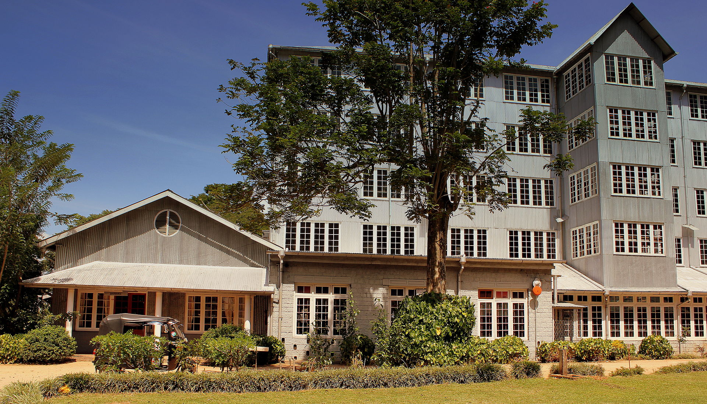
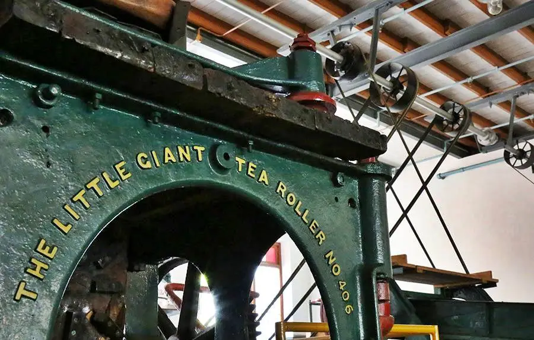
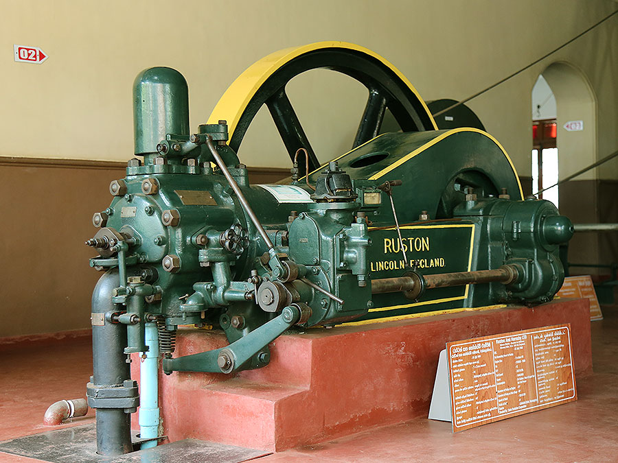

Ceylon Tea Museum
The Ceylon Tea Museum is housed in the former Hanthana Tea Factory, which was built in 1925. It is located 3 kilometers (1.9 miles) south of Kandy. Following the failure of the island's coffee production, Hanthana was one of the first successful areas to cultivate tea. Similar to the Passara substation established in the 1920s, the Tea Research Institute of Ceylon established a sub station on land leased from the Hanthana Estate in 1959. The Hanthana Station was established to meet the needs of mid-country tea plantations in terms of tea physiology and entomology.
The four-story tea factory had been closed for over a decade before being renovated in 2001 by the Sri Lanka Tea Board and the Planters' Association of Sri Lanka. The museum features exhibits on tea pioneers such as James Taylor and Thomas Lipton, as well as vintage tea-processing memorabilia. The ground floor is home to 19th-century century colonial generators, rollers, dryers, fermentation tables, sorting machines, and other machinery. The library and museum are located on the second floor. The third floor houses a shop, and the top houses a restaurant and tea room houses a restaurant and tea rooms.

The structure is packed with original machinery, such as the iconic "Little Giant Tea Roller," which twists dried tea leaves into spirals for cutting. There are also archival prints of nineteenth-century industry, including the life and works of tea pioneer James Taylor. The factory is well worth a visit and is a pleasant three-wheeler ride up from Kandy. Kandy is a must-see on any traveler's itinerary, and the location of the Ceylon Tea Museum in Hantana adds to the hill country's allure. Hantana is also close to the Peradeniya Botanical Gardens and the Loolecondera estate, where tea was first grown commercially in Sri Lanka, making it an ideal location.
The museum is open to the public from Tuesday to Sunday, with the exception of Monday. The store opens at 8.30 a.m. and stays open until 4 p.m. To have enough time for a tour and exploration, visitors should arrive at the museum at least an hour and a half before it closes.
Timings: On sundays and public holidays it closes early around 3 pm.
Price for the non-resident Adult: 800 LKR
For the non-resident Children: 400 LKR

The Bandaranaike International Airport is the closest to Kandy. The airport is nearly 103 kilometers from Kandy's center. For commuting, public transportation is easily accessible.
Traveling to Kandy by train is less expensive, more enjoyable, and safer. Every day, numerous trains travel from the capital city of Colombo to Kandy.
There are also air-conditioned buses available for the commute. You can take public transportation to work.

Tea drying machine

Tea Roller

What Our Customers Says
A wonderful historical and entertaining journey down memory lane. All the equipments are labeled in an orderly fashion. A tour guide is available on request. It has four floors. On the first floor is a mechanized model of an tea factory. On the second floor one can see the oldest tea package in Sri Lanka. On the fourth floor you can have a cup of tea and buy some tea.
-Christina Bailey-
The guide in wonderful sari had a very nice speach about the teas and the factory. There is also a model of the whole factory in one room. Guide had very good english.
Teas in the shop little overpriced, but less than in other tea factories.
Worth of visit.
-Wendy Anderson-
TEA PORIUM
Ultimate tea experience


Copyright © Tea porium Sri Lanka.All rights reserved.